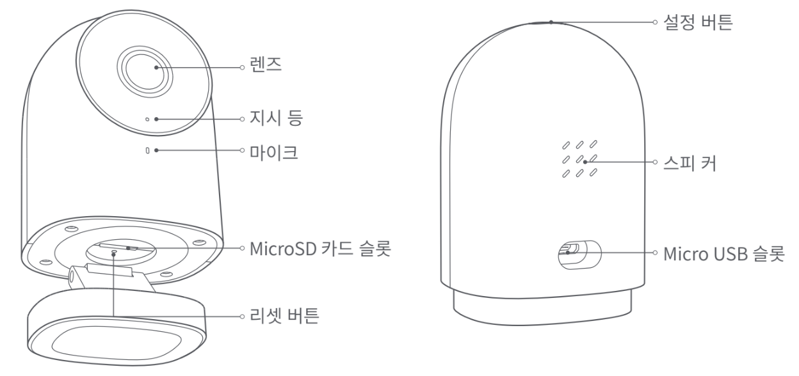

2 스마트 허브
2.1 스마트 허브 E1
2.1.1 설치 영상
2.1.2 제품소개
Aqara 스마트 허브 E1은 USB포트로 전력을 공급하고 Zibee 3.0 프로토콜을 지원하는 최신 스마트 허브입니다. 스마트 허브 E1은 크기가 작아 유연한 설치가 가능하며, USB포트가 있는 콘센트와 다양한 기기에 연결하여 사용할 수 있습니다. 또한 하위 장치의 데이터 전송을위한 WiFi 중계 기능을 탑재하고 있습니다.
2.1.3 빠른 설정
2.1.3.1 Aqara Home 앱 연결
앱 다운로드
아래의 QR코드를 스캔하거나 앱스토어에서 ’Aqara Home’을 검색하여 앱을 다운로드하고 설치해 주세요.

2.1.3.2 허브 설정
먼저 전원을 공급할 수 있는 USB 포트에 허브를 연결한 후 노란 불이 빠르게 깜박일 때까지 기다려 주세요. 휴대폰이 2.4GHz 밴드의 Wi-Fi 네트워크에 연결되어 있는지 확인해 주세요.
- 휴대폰은 허브에 최대한 가까이 위치한 뒤 연결해 주시고 휴대폰이 허브와 동일한 Wi-Fi 네트워크에 있는지 확인하십시오.
Aqara Home 앱 첫화면에서 오른쪽 상단의 ’+’를 클릭하고 ’스마트 허브 E1’을 선택한 뒤 안내 사항에 따라 허브를 추가해주세요.
- HomeKit 연결하기: Apple “Home” 안내에 따라 허브에 있는 HomeKit 설정 코드를 스캔하시거나 수동으로 코드를 입력해주세요. 성공적으로 추가되는 경우 Apple Home 앱에서 추가된 허브를 확인하실 수 있습니다. 설정 코드는 반드시 보관해주세요.
실패하는 경우 허브를 10초간 길게 눌러 네트워크를 재설정한 후 앱에서 다시 추가를 진행해 주세요. 도움이 필요하신 경우 www.aqara.com/support를 방문해 주세요.
2.2 스마트 리모컨 허브 M2
2.2.1 설치 영상
2.2.2 제품소개
스마트 허브 M2는 스마트홈 컨트롤 센터로 WiFi(무선) 또는 Ethernet(유선)으로 연결되어 다양한 Zigbee장치들과 상호작용 합니다. 또한 스마트 리모컨 기능까지 탑재하여 플러그, 조명, 커튼 뿐만 아니라 에어컨, 선풍기 등 가전까지 더욱 편리하게 컨트롤하게 해 줍니다.
- 본제품은 실내에서만 사용 가능합니다.
2.2.3 빠른 설정
2.2.3.1 Aqara Home 앱 다운로드
앱스토어에서 “Aqara Home”을 검색하거나 혹은 다음과 같은 QR코드를 스캔하여 “Aqara Home”앱을 다운로드하세요.

2.2.3.2 허브설정
2.2.3.2.1 허브 설치 위치 선택: 허브는 집의 공유기로부터 2-6m 정도 떨어져 있어야 하며, 허브와 공유기 사이 그리고 허브 주변에 금속 차폐물이 없도록 하는 것이 좋습니다.
2.2.3.2.2 허브에 전원 연결: 5V-1A 또는 5V-2A 어댑터(별매)와 USB전원선을 사용하여 허브에 전원을 연결하세요.
- 허브와 공유기 간에 유선 네트워크 통신을 사용해야 하는 경우, RJ45랜케이블을 사용하여 허브 LAN포트와 공유기 LAN포트를 연결하고 허브측 포트에 램프가 깜빡이는 것을 확인하세요.
##### 허브 지시등이 노란색(또는 빨간색)이 켜져 있는 상태에서 깜빡임 표시로 바뀔 때까지 기다리세요, (초기 안내 음성은 영어로 진행됩니다.)
##### 스마트폰의 Wi-Fi를 켜고 허브를 연결하려는 Wi-Fi와 동일한 2.4GHz Wi-Fi에 연결해 주세요.
- 듀얼밴드 공유기를 사용하는 경우 스마트폰이 5GHz Wi-Fi와 연결되지 않도록 주의 하세요.
- 연결하는 동안 스마트폰은 가능한 허브와 가까운 위치를 유지해 주세요,
##### Aqara Home app을 열고 첫 페이지 오른쪽 상단 모서리 '+'를 클릭하고 '스마트 허브 M2'를 선택한 뒤 앱의 지시에 따라 허브를 등록하세요.
- IOS 사용자인 경우 Apple HomeKit에서 제어를 원하신다면 Aqara Home app을 열기 전 허브 밑 부분 또는 설명서에 있는 HomeKit 설정 코드(보관필요)를 Apple Home app에서 스캔하거나 수동으로 입력해 허브를 Homekit에 바인딩합니다. 바인딩이 완료되면 Apple Home app에 허브가 추가된 거을 확인할 수 있습니다.
##### 만약 추가에 실패했다면 허브의 리셋 버튼을 10초 이상 누르세요. 잠시 후 노란색(또는 빨간색) 표시등이 깜빡이면 위의 연결 절차를 다시 진행해 주세요. 문의가 필요하실 경우: www.aqara.com/kr/support.html을 방문해 주세요.디바이스 추가에 실패하면 다음 사항을 확인하세요.
디바이스가 2.4 GHz 와이파이에 연결되어 있는지 확인하세요.
와이파이 이름 또는 비밀번호에 지원되지 않는 특수문자가 포함되어 있어 라우터에 연결할 수 없는 경우, 일반 문자로 비밀번호를 변경 후 다시 시도하세요.
WAP/WAP2 와이파이 네트워크는 지원하지 않습니다.
라우터에 와이파이 무단 사용 방지 기능이 켜져 있다면 끄고 시도하세요.
라우터의 AP 분리 기능으로 인해 휴대폰이 LAN내부에서 디바이스를 찾을 수 없는지를 호가인하세요.
HomeKit 연동에 실패하면 다음 사항을 확인하세요.
액세서리 추가 실패시 반복적인 실패로 인한 정보 찌거기가 오류를 유발합니다. iOS 장비를 재부팅하고 초기화한 다음, 다시 시도하세요. 계속 실패할 경우, 라우터 호환성을 점검하고 다른 기기로 교체하여 시도하세요.
액세서리가 이미 추가되었다는 메시지가 나온다면, iOS장비를 재부팅하고 초기화한 다음, HomeKit 설치 코드를 수동으로 입력하고 다시 추가하세요.
2.2.3.3 사용
2.2.3.3.1 안내 음성 언어 변경: 장치 탭에서 스마트 허브 M2를 선택한 뒤 우측 상단의 …을 눌러 추가 설정에서 안내 음성 언어를 변경하세요.
2.2.3.3.2 하위 기기 추가: 허브가 성공적으로 추가되었다면 연결할 하위 기기의 퀵 가이드를 참조하여 하위 기기를 추가하세요.
2.2.3.3.3 IR 가전 컨트롤(스마트 리모컨): app 안내에 따라 컨트롤해야 할 IR 가전의 브랜드와 모델을 app에서 선택합니다. 설정이 완료되면 app에서 선택합니다. 설정이 완료되면 app에서 가전을 제어하거나 자동실행을 설정해 보세요.
2.2.3.4 스마트 허브 M2 공장 값으로 초기화
허브 전면의 버튼을 10번 빠르게 누릅니다.
2.2.3.4.1 지시등 설명

- 장치 펌웨어 업그레이드 및 업데이트로 인해 실제 동작은 위의 설명과 약간 다를 수 있으므로 현재 앱의 지침 또는 실제 장치 상태 프롬프트를 따르십시오.
2.2.3.4.2 기본치수

2.2.3.4.3 사용자 공지사항
본 제품은 HomeKit을 지원하는 기기로서 최신 버전의 iOS 또는 iPadOS를 사용하는 것을 권장합니다. HomeKit을 지원하는 기기를 원격으로 제어하거나 자동화 설정하려면 HomePod 또는 Apple TV 또는 이미 홈 허브로 설치된 iPad 한 대를 설치해야 하며 소프트웨어와 운영 체제를 최신 버전으로 업데이트할 것을 권장합니다.
허브와 iPhone, iPad, Apple Watch, HomePod 또는 Mac 사이의 통신은 Homekit 기술보호를 받게 됩니다.
Works with Apple 로고를 사용하는 것을 이 제품이 로고에 표시된 기술과 연동하여 사용할 수 있도록 디자인 되었다는 것을 의미하며, 개발자에 의해 인증되었고, Apple의 성능 기준에 부합합니다. Apple은 해당 제품의 조작 또는 그에 적합한 안저 기준에 책임을 지지 않습니다.
2.3 스마트 홈카메라 허브 G2HPro
2.3.1 설치 영상
2.3.2 제품 소개
Aqara 스마트 허브 G2H Pro는 카메라와 스마트 허브의 기능을 통합한 제품입니다. 카메라를 통해 영상 통화, 동작 감지, 소리 감지, MicroSD 카드를 통한 영상 녹화, NAS 스토리지, 타임랩스, 사생활 보호 영역 설정 등 다양한 기능을 지원합니다. 또한 Zigbee 통신 방식을 통해 센서, 컨트롤러 등 다양한 하위 장치를 연결하여 홈 보안, 데이터 확인, 원격 제어 등 다양한 스마트 시나리오를 구성할 수 있습니다. Apple 홈 공식 액세서리로 HomeKit 보안 비디오를 지원합니다.

2.3.3 설치 전 확인 사항
Wi-Fi 또는 데이터 통신 방식을 지원하는 스마트폰이나 태블릿이 필요합니다. (iOS, Android 모두 가능)
Wi-Fi에 연결이 되어 있고 네트워크 연결이 안정적인지 확인해 주세요.
2.3.4 빠른 설정
2.3.4.1 Aqara Home앱 다운로드
앱스토어에서 “Aqara Home”을 검색하거나 아래 QR코드를 스캔하여 전용 앱을 다운로드해 주세요.

2.3.4.2 허브 설치하기
허브 설치 위치 선택: 허브와 공유기 사이 그리고 허브 주변에 금속 차폐물과 같은 방해 물질이 없는 것이 좋습니다.
허브에 전원 연결하기: 전원선을 전원 어댑터를 연결한 후 제품 뒷면의 MicroUSB 슬롯에 연결해 주세요. 전원이 연결되면 지시등이 노란색으로 빠르게 깜빡입니다. 스마트폰이나 태블릿이 2.4GHz대역의 WiFi에 연결되어 있는지 확인해 주세요.
2.3.4.3 Aqara Home앱에 허브 추가하기
Aqara Home앱에서 첫페이지 오른쪽 상단의 ’+’를 눌러 ’장치 추가’를 누른 뒤 ’스마트 허브 G2H Pro’를 선택해 주세요. 앱의 지시 사항에 따라 장치를 추가하고, 연결이 완료되면 지시등이 파란색으로 변경됩니다.
장치 추가에 실패하는 경우 아래의 사항을 확인해 주세요.
Wi-Fi 이름 또는 암호에는 @,#,%,-,$와 같은 특수 문자를 지원하지 않습니다. 일반 문자로 변경한 후 다시 시도해 주세요.
카메라가 스마트폰에서 생성된 QR코드를 인식하지 못하는 경우 화면 크기가 4.7인치 이상인지 확인하고, 백라이트 기능이 켜져 있지 않은지 확인해 주세요,
공유기에 Wi-Fi 무단 사용 방지 기능이 켜져 있다면 이를 끄고 시도하세요.
공유기의 AP 격리 기능으로 인해 스마트폰이 LAN 내부에서 디바이스를 찾을 수 없는지 확인하세요.
장치가 2.4GHz 대역의 Wi-Fi에 연결되어 있는지 확인하세요.
2.3.4.4 하위 장치 추가하기
허브를 성공적으로 추가한 후 Aqara Home앱의 안내 사항에 따라 하위 장치들을 추가해 주세요.
Apple HomeKit 연결하기
Apple 홈 앱에서 오른쪽 상단의 ‘+’를 눌러 ’액세서리 추가’ 페이지로 이동 하세요.
제품 하단의 HomeKit 코드를 스캔하거나 수동으로 코드를 입력하여 허브를 HomeKit에 연결합니다.
HomeKit 년결에 실패하는 경우 아래의 사항을 확인해 주세요:
액세서리 추가 실패 시 반복적인 실패로 인한 캐시 문제로 오류가 발생할 수 있습니다. iOS 장비를 재부팅한 후 초기화하여 다시 시도 하세요.
액세서리가 이미 추가되었다는 메시지가 나오는 경우 iOS장비를 재부팅하고 초기화한 후, HomeKit 설치 코드를 수동으로 입력해 다시 추가해 주세요.
액세서리 찾기 실패 시 장비를 초기화하고 약 3분 후에 HomeKit 설치 코드를 수동으로 입력하여 다시 추가해 주세요.
안내 사항
Works with Apple 로고의 사용은 이 제품이 로고에 표시된 기술과 연동하여 사용할 수 있도록 디자인 되었다는 것을 의미하며, Apple의 성능 기준에 부합함을 인정 받았다는 것을 의미합니다. Apple은 해당 제품에 대한 사용이나 이에 적합한 안전 기준에 책임을 지지 않습니다. 스마트 허브 G2H Pro를 통해 녹화한 영상 데이터는 최대 10일까지 iCloud에 저장되며 iCloud에 저장되며 iPhone, iPad 또는 Mac의 Apple Home앱에서 확인할 수 있습니다. 200GB요금제를 이용할 경우 스마트 허브 G2H Pro 1대를 등록할 수 있으며, 2TB 요금제를 이용할 경우 최대 5개의 허브를 등록할 수 있습니다. 녹화한 영상 데이터는 iCloud 저장 용량에 포함되지 않습니다.
스마트 허브 G2H Pro와 iPhone, iPad, Apple Watch, HomePod, Mac등의 Apple 기기와의 통신에는 HomeKit기술이 적용됩니다.
제품이 Wi-Fi 연결이 가능한 범위 내에 있는지 확인해 주세요.
제품 근처에 장애물이나 전자파장애를 일으킬 수 있는 물체가 없는 지 확인해 주세요.
본 제품은 실내에서만 사용할 수 있습니다. 습기가 많은 환경이나 실외에서 사용하지 마세요.

2.3.5 제품 설치
2.3.5.1 스마트 허브 G2H Pro가 정상적으로 앱에 추가되었는지 확인 후에 벽에 설치해 주세요.
2.3.5.2 책상, 테이블, 책장 같은 수평 공간에 제품을 올려두고 사용할 수 있습니다.
2.3.5.3 하단부의 받침대에는 냉장고, 철문 등과 같은 철제 물질의 표면에 부착할 수 있도록 자석이 포함되어 있습니다. 단, 컴퓨터 본테나 하드 드라이브 근처에 설치하지 마세요.
2.3.5.4 양면 테이프로 유리, 타일, 라텍스 소재 벽면과 같이 매끄러운 표면에 자석을 부착하여 사용할 수 있습니다. 또는 동봉된 나사로 메탈 플레이트를 고정한 후 제품을 부착해서 사용할 수 있습니다.
2.3.6 제품 사양

2.3.7 버튼 사용 방법

2.3.8 지시등 상태 설명

2.3.9 주의 사항
2.3.9.1 본 제품은 어린이가 사용할 경우 위험할 수 있으므로, 어린이의 손이 닿지 않는 곳에 두십시오.
2.3.9.2 본 제품은 실내 사용 용도로 설계되엇습니다. 습한 환경이나 실외에서 사용하지 마십시오.
2.3.9.3 비바람에 노출된 장소, 물이 튀는 곳에 설치하지 마십시오. 물 또는 액체류를 제품에 엎지를 경우 고장, 감전 및 화재의 위험이 있습니다.
2.3.9.4 본 제품을 열원 부근에 설치하거나 환기가 잘 되지 않는 밀폐된 공간에서 사용하지 마십시오.
2.3.9.5 본 제품을 임의로 분해, 수리, 개조하지 마십시오. 수리가 필요한 경우 support@aqara.kr로 연락하십시오.
2.3.9.6 본 제품은 생활의 편리 및 편의성을 개선하기 위한 용도록 적합합니다. 가정, 건물, 창고 또는 다른 장소의 방범 용도로 사용하는 것을 권장하지 않습니다. 사용자가 상기 사용 지침을 따르지 않고 해당 제품을 사용할 경우에 발생하는 어떠한 위험 및 재산 손실에도 제조사는 귀책이 없음을 알려 드립니다.
2.3.9.7 제품을 벽면에 고정시키기 위해 하단부의 거치대에 강력한 자석이 내장되어 있습니다. 그럼에도 불구하고 제품이 떨어지는 경우에 부상을 방지하기 위하여 2m이하의 높이에 설치하는 것을 권장합니다.
2.3.9.8 해당 제품에는 전원 어댑터가 포함되어 있지 않습니다. 별도로 구매 후 사용해 주시기 바랍니다.
2.4 스마트 홈카메라 허브 G3
2.4.1 설치 영상
2.4.2 제품 소개
스마트 허브 G3는 좌우회전 및 상하 각도조절이 가능한 홈 카메라 허브입니다, 2K(1296) 해상도의 선명한 화질은 물론 스마트 허브 기능까지 포함하고 있어 다양한 아카 Zigbee 장치를 연동할 수 있습니다. 내장된 NPU 칩을 통해 안면 인식을 포함한한 다양한 AI 기능을 제공합니다. 또한 추적 및 자동회전 기능을 통해 사람과 개/고양이를 구분하여 추적하거나 설정한 구역을 지속 순환하는 크루즈 감시 모드등을 지원합니다. 또한 적외선 컨트롤 모듈울 탑재하여 에어컨, TV, 등 주변 가전 기긱를 스마트하게 사용하실 수 있습니다. Apple HomeKit 공식 액세서리로 홈킷 보안 비디오를 지원합니다.
제품 전면
버튼 기능:
3초간 길게 누르기: 긴급 푸시 메시지 전송
10초간 길게 누르기: Wi-Fi 네트워크 초기화
10번 빠르게 누르기: 공장 초기화
제품 후면

제품 회전/마이크로 SD 카드 슬롯:

2.4.3 빠른 설정
2.4.3.1 Aqara Home 앱 다운로드
애플 또는 구글 앱스토어에 “Aqara Home”을 검색하거나 아래의 QR코드를 통해 앱을 다운로드 하세요.

2.4.3.2 카메라 전원 공급
동봉된 또는 정확한 규격의 5V 2A 어댑터/충전기를 통해 후면 C타입 포트로 전원을 공급해 주세요. 전원이 공급이 되면 즉시 노란색 지식등이 표시되고 잠시 후 준비가 완료되면 노란색 지시등이 깜빡이며 연결 대기 상태로 진입합니다.

- 만약 지시등이 노란색이 아니거나 깜빡이지 않는다면, 버튼을 빠르게 10회 눌러 공장 초기화를 진행 할 수 있습니다.
2.4.3.3 장치 추가
2.4.3.3.1 Aqara Home앱에 연결하기
아카라 홈 앱을 열고 우측 상단의 ‘+’ 장치 추가를 선택한 후 “스마트 허브 G3”를 선택해 주세요. 앱의 안내에 딸 허브를 추가해 주세요. 성공적으로 연결되는 경우 지시등이 파란색으로 변경됩니다. 연결에 ㅅㄹ패하는 경우 아내 내용을 참고하여 다시 시도해 주세요.
Wi-Fi 이름 또는 암호에는 @,#,%,-,$와 같은 특수 문자를 지원하지 않습니다. 일반 문자로 변경한 후 다시 시도해 주세요.
카메라가 스마트폰에서 생성된 QR코드를 인식하지 못하는 경우 화면 크기가 4.7인치 이상인지 확인하고, 백라이트 기능이 켜져 있지 않은지 확인해 주세요.
공유기에 Wi-Fi 무단 사용 방지 기능이 켜져 있다면 이를 끄고 시도하세요.
공유기의 AP 격리 기능으로 인해 스마트폰이 LAN 내부에서 디바이스를 찾을 수 없는지 확인하세요.
2.4.3.3.2 Apple Home에 연결하기
애플 홈 앱을 열고 우측 상단의 ‘+’-’액세서리 추가’를 선택한 후 설정 코드를 스캔하거나 직접 코드를 입력하여 장치를 추가해 주세요. 홈킷 연결에 실패하는 경우 아래의 내용을 참고하여 다시 시도해 주세요.
2.4.3.3.3 홈킷 연결 실패 시 조치 사항
“액세서리를 추가할 수 없음” 메시지는 iOS 시스템에 캐시가 남아 있는 경우 발생할 수 있습니다. iOS 기기를 재부팅 하고 카메라를 초기화 한 뒤 다시 시도해 주세요.
“액세서리가 이미 추가되어 있음” 메시지가 표시된 경우 애플 홈 앱에서 장치가 삭제되어 있는지 확인해 주세요. 이후 iOS 기기를 재부팅 하고 카메라를 초기화하고 다시 시도해 주세요.
“액세서리를 찾을 수 없음” 메시지가 표시된 경우 카메라를 리셋하고 3분간 대기 후 수동으로 홈킷 코드를 입력해 주세요.
2.4.3.4 하위 장치 추가
카메라 허브를 성공적으로 설치한 후 앱이나 하위 장치의 메뉴얼을 참고하여 하위 장치를 허브에 등록해 주세요.
2.4.4 제품 설치
2.4.4.1 해당 장치에는 브라켓을 설치 할 수 있는 1/4인치 규격의 스크류 소켓이 있습니다. 벽면 또는 천장에 설치하는 경우하는 경우 적합한 브라켓을 이용하여 설치해 주세요.(브라켓은 별도 구매가 필요합니다.)
2.4.4.2 제품을 설치하기 전에 카메라 허브가 앱에 정상적으로 등록되었는지 반드시 확인해 주세요,
2.4.4.3 책상, 식탁,책장 등 카메라를 올려 둘 수 있는 수평 공간에 올려두고 사용할 수 있습니다.
2.4.4.4 카메라의 설치 위치 및 방향에 따라 화면 반전이 필요할 수 있습니다. 해당 경우에는 Aqara Home앱에서 설정해 주세요.
Wi-Fi 네크워크 영역 내에 카메라를 설치해야 합니다.
강력한 자기를 띄거나 전파를 방해하는 물체 주변에 설치하지 마세요.
강한 직사 광선이 렌즈에 가해지는 것을 피해 주세요.
장치 주변에 기타 장애물이 없도록 해 주세요.
해당 장치는 실내용으로 설계되었습니다.

스마트 허브 G3는 다양한 방법으로 설치하여 사용하실 수 있습니다. 브라켓을 이용하여 설치하는 경우에는 설치 가이드를 참고하여 안전하게 설치해 주세요, (브라켓 별매)
2.4.5 지시등 상태 설명
| 지시등 상태 | 장치 상태 |
|---|---|
| 노란불 켜저 있음 | 기기 켜지는 중 |
| 노란불 빠르게 깜빡임 | 네트워크 연결 대기 중 |
| 파란불 빠르게 깜빡임 | 네트워크 연결 중 |
| 파란불 천천히 깜빡임 | 네트워크 연결 완료 및 계정 연결 중 |
| 파란불 켜져 있음 | 정상 작동 중 |
| 빨간불 켜져 있음 | 영상 스트리밍 중 (애플 홈킷 녹화 중) |
| 하얀불 켜져 있음 | 장치가 켜진 상태에서 10분 이상 어떠한 네트워크에도 연결되지 않음 |
| 보라색불 천천히 깜빡임 | 하위 장치 추가 준비 |
| 노란불 천천히 깜빡임 | 펌웨어 업데이트 중 |
| 지시등 꺼짐 | 지시등 끄기가 설정된 상태 / 프라이버시 모드가 설정된 상태/전원이 연결되지 않은 상태 |
2.4.6 제품 사양
모델명: CH-H03
비디오 인코딩: H.264 해상도: 2K(2304x1296p)
입력전압: 5V / 2A
시야각: 100’
총 전력 소비량: 10W(최대)
제품크기: 123.4 X 85.1 X 67.8 mm
작동온도: -10’C ~ 40’C
팬/틸트 각도: 수평 340’, 수직 45’ (위로 30’,아래로 15’)
무선 연결 프로토콜: Wi-Fi IEEE 802.11b/g/n/a/ac 2.4/5GHz, Zigbee 3.0
로컬 스토리지: MicroSD 카드(CLASS 4이상, 최대 128GB 지원)
2.4.7 안내 사항
Works with Apple로고의 사용은 이 제품이 로고에 표시된 기술과 연동하여 사용할 수 있도록 디자인 되었다는 것을 의미하며, Apple의 성능 기준에 부합함을 인정 받았다는 것을 의미합니다. Apple은 해당 제품에 대한 사용이나 이에 적합한 안전 기준에 책임을 지지 않습니다. 스마트 허브 G3를 통해 녹화한 영상 데이터는 최대 10일까지 iCloud에 저장되면 iPhone,iPad, 또는Mac의 애플 홈 앱에서 확인할 수 있습니다. 등록 가능한 카메라 수는 iCloud+ 플랜에 따라 변경됩니다. 녹화한 영상 데이터는 iCloud저장 용량에 포함되지 않습니다. 스마트 허브 G3와 iPhone, iPad, Apple Watch, Homepod, Mac등의 Apple 기기와의 통신에는 HomeKit 보안 기술이 적용됩니다.
2.4.8 주의 사항
본 제품은 어린이가 사용할 경우 위험할 수 있으므로, 어린이의 손이 닿지 않는 곳에 두십시오,
본 제품은 실내 사용 용도로 설계되었습니다. 습한 환경이나 실외에서 사용하지 마십시오.
비바람에 노출된 장소, 물이 튀는 곳에 설치하지 마십시오. 물 또는 액체류를 제품에 엎지를 경우 고장, 감전 및 화재의 위험이 있습니다.
본 제품을 열원 부근에 설치하거나 환기가 잘 되지 않는 밀폐된 공간에서 사용하지 마십시오.
본 제품을 임으로 분해, 수리, 개조하지 마십시오. 수리가 필요한 경우 support@aqara.kr로 연락하십시오.
본 제품은 생활의 편리 및 편의성을 개선하기 위한 용도로 적합합니다. 가정, 건물, 창고 또는 다른 장소의 방범 용도로 사용하는 것을 권장하지 않습니다. 사용자가 상기 사용 지침을 따르지 않고 해당 제품을 사용할 경우 발생하는 어떠한 위험 및 재산 손실에도 제조사는 귀책이 없음을 알려 드립니다.
일반적인 사용 환경에서, 본 장치를 인체로부터 20cm 이상 떨어뜨려 사용해 주세요.